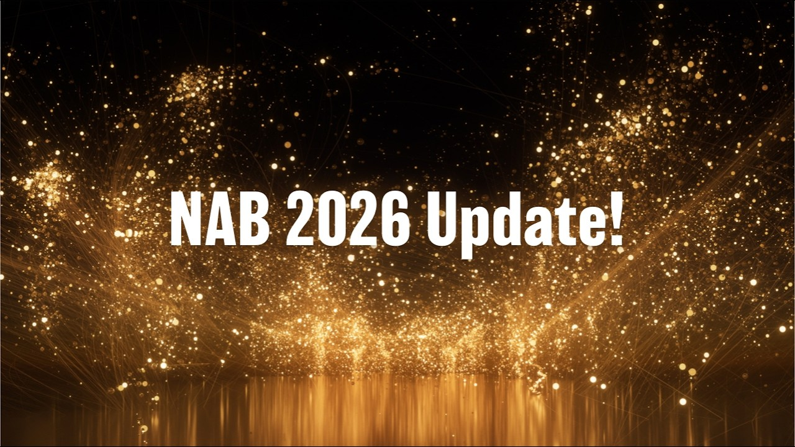

2026
April
14th April 2026
Happy Tuesday! 👋
Following on from yesterday's Blackmagic-heavy post, their NAB 2026 video went live last night.
You can watch it on YouTube:

I just really love these launch videos - they're perfect.
Grant is just awesome - he's so knowledgeable, so on-top of everything, and clearly just loves what he does, and what his and his team builds.
I get so much joy at watching him geeking out over "beautiful racks" of gear.
It's clear that he's VERY excited about Immersive Filmmaking - especially for live broadcast.
As this is a Final Cut Pro site, I won't go into too much detail over the changes in DaVinci Resolve - however it's basically what I was expecting.
Jumper now has competition in the DaVinci Resolve space, and there's a HEAP of incredible new machine learning tools.
Fairlight Live looks AMAZING - and insanely powerful.
You can learn more about all their announcements and new products on the Blackmagic website.
Interestingly, the one thing we didn't actually see released is an official Blackmagic RAW Media Extension, which was announced at the previous Final Cut Pro Creative Summit - so BRAW Toolbox remains the best way to get BRAW footage into Final Cut Pro.
I'm still tinkering with a BRAW Toolbox Media Extension - but it's a very tricky problem to solve, so no promises or ETA.
In other news, Apple has removed the old Pages, Keynote, Numbers apps from the Mac App Store, which is kinda sad - leaving only the Apple Creator Studio versions.
You can read more on 9to5Mac.
Things have been busy in the world of SpliceKit! 🔥
We now have OpenTimelineIO import and export, and the beginnings of an Audio Mixer! 🥳
There's been a quite few releases in the last 24 hours...
SpliceKit v3.1.8 had the following changes:
🐞 Bug Fixes:
- Transcript persistence across projects — switching projects no longer shows stale transcript from previous project; added
transcript.clearRPC endpoint - addTodoMarker fixed — was returning "No responder handled"; now uses direct sequence method
- Silence detection — was returning 0 silences on clips with obvious pauses; improved threshold algorithm and added start-to-start interval detection
- Timeline duration — was reporting 0.000s; now falls back to summing spine clip durations
- add_markers_at_times offset — now accounts for timeline start offset (e.g. 01:00:00:00)
🥳 New Features:
- OpenTimelineIO import/export — universal timeline exchange with DaVinci Resolve, Premiere Pro, Avid (
.otio,.edl,.aaf) - Native OTIO-to-FCPXML converter — frame-exact conversion with canonical SMPTE timebases
- Compound clip drilling —
get_timeline_clipsnow exposesisCompound,nestedItemCount, andinclude_nestedparameter - Batch editing tools —
apply_transition_to_all_clips,batch_apply_effect,batch_color_correct - Expanded command palette — full categorized action lists, comprehensive AI capabilities prompt
- Lua example —
shuffle_clips.luascript
SpliceKit v3.1.9 had the following changes:
🐞 Bug Fixes:
- Fix patcher signing on macOS 15.7.3 — the patcher was applying only 1 entitlement (cs-disable-library-validation) instead of the full set needed for ad-hoc signing. This caused the re-signed app to launch unsigned on some systems, triggering a CloudKit crash (EXC_BREAKPOINT in CloudContentCatalog.updateCatalogAndRegistry()). Now applies all 4 required entitlements including explicit app-sandbox=false to prevent CloudKit entitlement validation failures. Fixed across all patcher paths: GUI app (initial patch + update), shell script, and entitlements.plist. (Fixes #23)
📄 Documentation:
- Added plain-English explainer — What Is SpliceKit? covers what it is, how it works, and whether it's safe, written for non-technical users. Linked from the top of the README.
SpliceKit v3.1.10 had the following changes:
🐞 Bug Fix:
- Fix CloudKit crash on Final Cut Pro 12.2+, patcher diagnostic logging to
~/Library/Logs/SpliceKit/patcher.log, comprehensive startup diagnostics indylib, disable spring-loaded blade.
SpliceKit v3.1.11 had the following changes:
🐞 Bug Fix:
- Fix transcript editor missing connected clips (
FFAnchoredClipURL resolution), mixer panel, caption enhancements, CloudContent diagnostic logging, patcher launch monitoring.
SpliceKit v3.1.12 had the following changes:
🔨 Improvements
- Live audio metering in mixer panel, Final Cut Pro role colors, keyframed volume support.
SpliceKit v3.1.13 had the following changes:
🐞 Bug Fix:
- Mixer metering works without Audio Meters panel, CALayer tree search for mini transport meters.
You can download and learn more on the SpliceKit Website.
PostLab v26.1.2 has been released with the following changes:
Improved:
- Much improved and faster Synology Drive support.
Fixed:
- On Synology Drive, Box and Dropbox, an error could occur when switching and loading collections. Also, loading and saving could take longer than expected. Thanks for reporting, Felipe, Matthieu and Sam!
You can learn more and download on the PostLab website.
Doza Assist v2.1.0 and v2.1.1 have been released with the following changes:
Stories Sidebar:
- Browse, rename, and switch between stories in the left sidebar
- Duration and clip count shown per story
- Trash button with confirmation dialog
Chat Story Building:
- Build stories directly from Chat using natural language
- Build as Story button when chat returns clips
- Inline story results in chat with clip previews and Open in Story Builder action
UI Improvements:
- Reordered tabs: Transcript > AI Analysis > Chat > Story Builder > Clips > Export
- Removed story topbar, moved Play All to action buttons
- Better sidebar scrolling - video player stays visible
- Clean spacing between action buttons and story clips
Bug Fixes:
- Fixed story clips not rendering when opening Story Builder from Chat
- Speakers section hidden on Story Builder tab to reduce clutter
You can download and learn more on GitHub.
FCP Library Cleaner v0.8.0 is out now with the following improvements:
- Cleanup Options: Added a "Delete All Temporary Files" button to quickly remove render, proxy, optimized, and optical flow files in a single click.
- Library Import: Enhanced macOS integration allowing libraries to be imported by dragging and dropping them directly onto the application icon.
- Translations: Expanded language support with new translations for German, Spanish, and Portuguese.
- User Interface: Refined the interface for a more intuitive experience.
- Error Handling: Improved internal logic to catch and display detailed error messages directly within the interface for better diagnostics.
- Maintenance: Updated dependencies and refactored internal code architecture to improve stability and reliability.
You can learn more and download from the Mac App Store.
Change List X v1.2.27 is out now with the following bug fix:
- Critical bug fix for a crash caused by audio with no timecode
You can learn more and download from the Mac App Store.